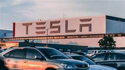

Welcome to Tesla
Tesla, the electric vehicle and clean energy company, is primarily known for its commitment to
accelerating
the transition to sustainable energy. The company's overarching mission is to:
Electrify Transportation
Promote Renewable Energy
Advance Energy Efficiency
Develop Innovative Technologies
Reduce Carbon Emissions
Overall, Tesla's purpose is to be a leader in the transition toward a more sustainable,
energy-efficient,
and environmentally responsible future. While their initial focus was on electric vehicles, they have
expanded their scope to encompass a broader range of clean energy technologies, all with the goal of
reducing humanity's impact on the environment and promoting a more sustainable way of living.
Tesla History
Tesla, Inc. is an American electric vehicle (EV) and clean energy company founded in 2003 by a group of engineers, including Martin Eberhard and Marc Tarpenning. Elon Musk joined the company shortly after its founding and became a major driving force behind its success. The company is named after Nikola Tesla, the renowned inventor and electrical engineer, as a tribute to his pioneering work in electricity and innovation. Tesla's mission is to accelerate the world's transition to sustainable energy. Tesla's first major product was the Tesla Roadster, an all-electric sports car introduced in 2008. It was the first highway-legal electric car to use lithium-ion battery cells. The Roadster demonstrated that electric vehicles could be fast, stylish, and viable for everyday use, challenging the perception that EVs were only practical for short trips and limited to smaller, less powerful vehicles. Following the success of the Roadster, Tesla expanded its product line to include the Model S, Model X, Model 3, and Model Y, covering a range of vehicle types from luxury sedans to SUVs and more affordable options. The company focused on advancing battery technology, enhancing vehicle range, and developing an extensive network of Supercharger stations for rapid charging. Tesla's Autopilot feature, a semi-autonomous driving system, has also garnered significant attention and controversy as it represents a step toward self-driving vehicles. The company has continued to push the boundaries of electric vehicle technology and sustainability. In addition to electric cars, Tesla has ventured into clean energy solutions, such as solar panels and home battery storage (Powerwall and Powerpack), aimed at reducing carbon emissions and providing renewable energy alternatives.
Our Tech
Electric Vehicle Technology: Electric Powertrains: Tesla's electric vehicles are built around advanced electric powertrains that include high-efficiency electric motors and power electronics. These powertrains provide instant torque, leading to impressive acceleration and efficiency. Battery Technology: Tesla has made significant advancements in battery technology. The company developed its own battery cells, such as the 18650 and 2170 cell formats, which are used in their vehicles and energy storage products. Their battery packs are known for their energy density and longevity. Range and Charging: Tesla has achieved impressive range capabilities with their EVs, allowing drivers to travel long distances on a single charge. The company also established a network of Supercharger stations for fast charging, making long road trips in Tesla vehicles practical. Autonomous Driving and AI: Autopilot: Tesla's Autopilot system offers various driver-assistance features, including adaptive cruise control and lane-keeping. It is designed to improve safety and convenience by reducing the driver's workload. Full Self-Driving (FSD): Tesla is actively developing a Full Self-Driving package that aims to make their vehicles fully autonomous. While FSD is not yet fully realized, it includes features like Navigate on Autopilot, which provides advanced autonomous driving capabilities on highways. AI and Neural Networks: Tesla utilizes artificial intelligence and neural networks to process data from its vehicles' sensors (such as cameras and radar) to enhance their self-driving capabilities. Tesla collects data from its entire fleet to improve these systems through over-the-air updates. Energy Storage: Powerwall: The Tesla Powerwall is a home battery system designed to store excess energy generated by solar panels or other sources. It provides backup power during outages and allows homeowners to use stored energy during peak demand times to reduce electricity costs. Powerpack and Megapack: These larger-scale energy storage solutions are intended for commercial and utility applications. They offer grid stability, load shifting, and renewable energy integration benefits. Solar Energy: Solar Panels: Tesla offers solar panels and solar roof tiles that capture solar energy for residential and commercial use. The solar roof tiles are designed to be aesthetically pleasing and blend seamlessly with traditional roofing materials. Software and Over-the-Air Updates: Tesla is known for its regular over-the-air software updates that not only improve vehicle functionality but also add new features. This approach allows Tesla to continuously enhance and refine its vehicles even after they have been purchased. Supercharger Network: Tesla's Supercharger network is a network of high-speed charging stations that enable Tesla vehicle owners to recharge quickly. This network is designed to facilitate long-distance travel with electric vehicles. Gigafactories: Tesla's Gigafactories are large-scale production facilities for batteries, electric vehicles, and other products. These factories are strategically located around the world to meet global demand.